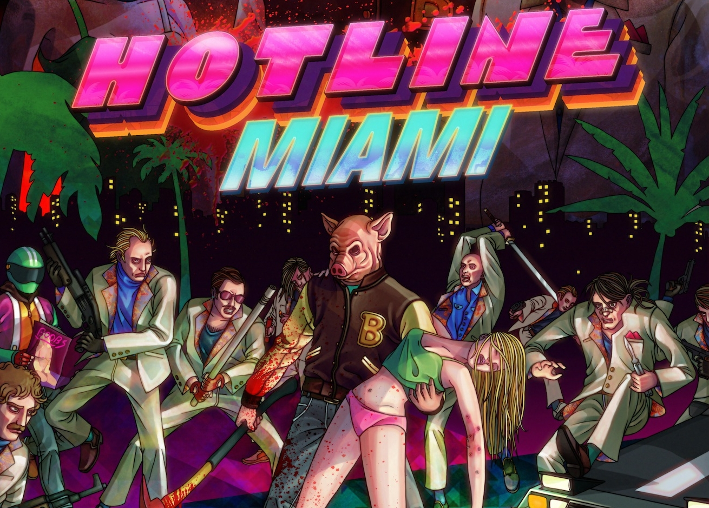

[sam@arch:~]$ echo "$(cat reviews/hotlineMiami.txt)"
_ _ _ _ _ __ __ _ _ | || |___| |_| (_)_ _ ___ | \/ (_)__ _ _ __ (_) | __ / _ \ _| | | ' \/ -_) | |\/| | / _` | ' \| | |_||_\___/\__|_|_|_||_\___| |_| |_|_\__,_|_|_|_|_|

Overall Rating:
8 out of 10 stars
I might have a bit of a soft spot for indie games, and with good reason. I didn't know what to expect when I picked up this 2012 game made by indie studio Dennaton, but it sent me on a spree of looking for games similar to it after I played for the first time. This cult game was so short yet sweet that it spawned its own genre of "Hotline Miami-type" Games. So what exactly is Hotline Miami? Well, if I had to describe it with four words; I would pick fast, violent, gory and difficult. The premise is that you are given rooms of russian mafia enemies to kill and you must do it as quickly and as efficiently as possible. You can put on different masks that give your character different abilities, such as faster movement or spawning with a knife. I mentioned gore earlier, and oh boy do I mean it. When an enemy is knocked over you can perform a doom-style glory kill on it for extra score, and an especially violent takedown. You can put a knife through their throat, and watch as they writhe in pain gasping for air and their blood paints the map. If you don't think you'd be able to handle violence like this, I don't think this game is for you. Luckily, this is the perfect game for me if I've had a bad day. Two other importand gameplay factors to mention are the pace and the difficulty, which are both very high. If you want to be able to get good grades at the end of each level, you'll need to make decisions and play at break-neck speed. As for difficulty, you will almost always die in a single hit. This game has a sharp learning curve as you'll need to get used to packs of enemies runing at you with rifles while you only have a knife. The A.I. is ruthless, sometimes it feels like you're up against robots due to how fast they can aim and execute you. Hotline Miami has 3 main types of enemies: the standard mafia member (who can carry guns or melee weapons and often dies in one hit), the Bodyguard (who can only use melee, but will take several hits to kill, or will "Bleed out") and the Guard Dog (who runs at you at a high speed with a small hitbox). Hotline Miami has a pretty good story too, mainly involving a secret nationalist organisation, the russian mafia and one man's revenge story. There are some entertaining twists throughout that'll keep you questioning the intentionally vague plot. There is also a secret ending that involves picking up hidden letters throughout the levels to unlock, which further explains the story. Overall, I gave Hotline Miami an 8 due to its high yet rewarding difficulty, its overall entertainment value, its vague yet intriguing story and its general indie game charm. What stopped it from getting a perfect score, however, was its accessibility. This is because the difficulty may be too hard for some, more casual, players and the overt violence could turn many away.